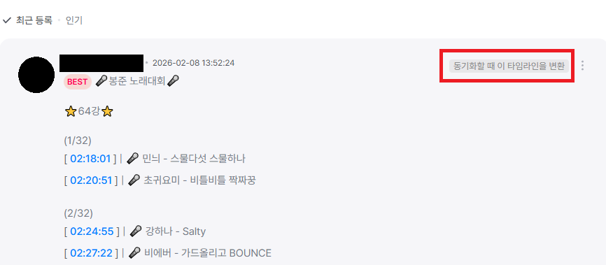

v1.5.0 주요 변경사항
-
새 기능: 타임라인 댓글 동기화
- 타임라인 댓글을 다른 스트리머 다시보기와 동기화할 때 변환할 수 있는 기능이 추가되었습니다.
- 타임라인이 포함된 댓글의 우측상단에 표시된 동기화할 때 이 타임라인을 변환을 클릭하여 활성화하고 동기화를 진행하면 동기화된 다시보기 페이지에서 변환된 타임라인 댓글을 확인하고 미세조정, 복사를 할 수 있습니다. 아직은 SOOP에서만 가능합니다.

-
이전 채팅 복원
- 설정에서 이모티콘만으로 구성된 채팅은 제외할 수 있는 기능이 추가되었습니다.
- 복원된 채팅에 마우스를 올리면 표시되는
~초 전 툴팁을 클릭하여 해당 채팅이 발생한 시점으로 이동할 수 있습니다.
▶
버그 수정 내역 보기
- SOOP에서 다른 VOD로 변경되었을 때 기존 타임스탬프가 사라지던 문제를 해결했습니다.
- 일부 VOD에서 타임스탬프 오류가 발생하던 문제를 수정했습니다.
- 일부 VOD에서 타임스탬프 오류가 발생하던 문제를 수정했습니다.
- 일부 VOD에서 타임스탬프 오류가 발생하던 문제를 수정했습니다.
- 일부 VOD에서 타임스탬프 오류가 발생하던 문제를 수정했습니다.